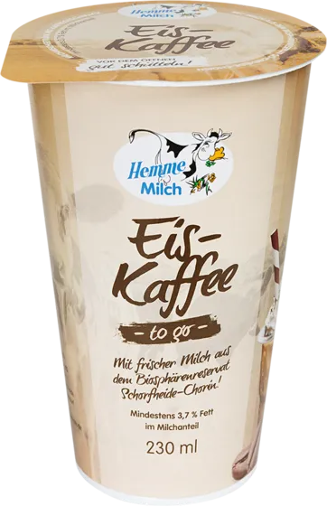
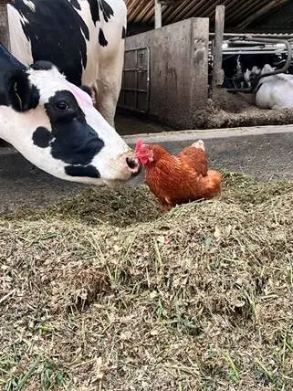
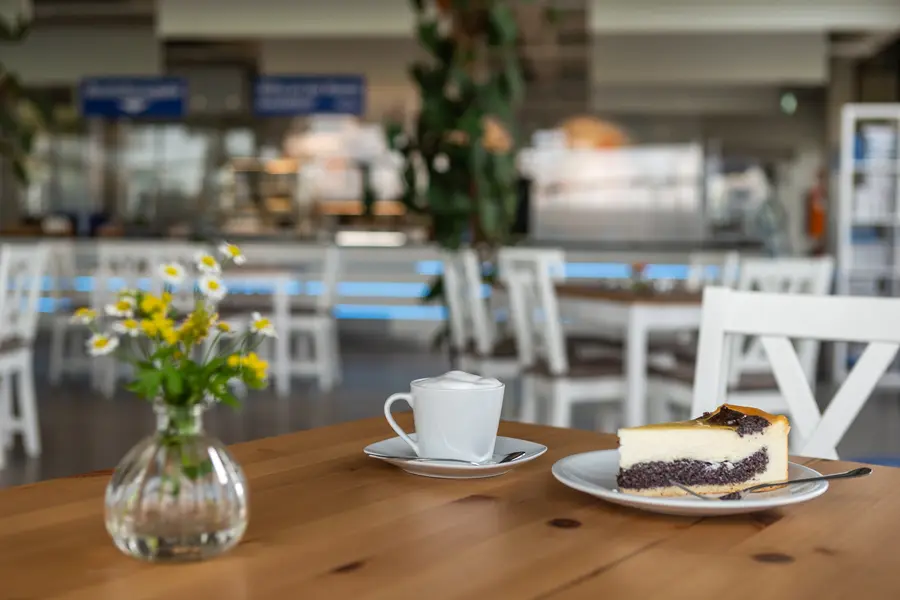
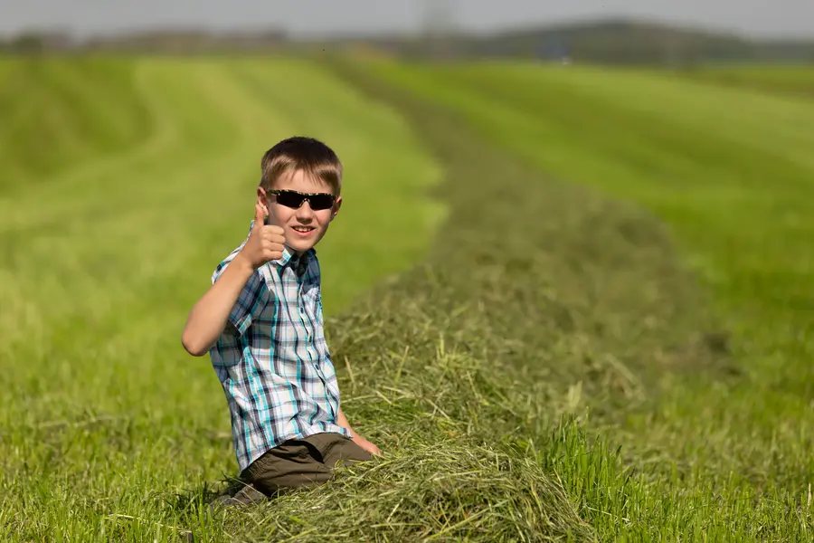
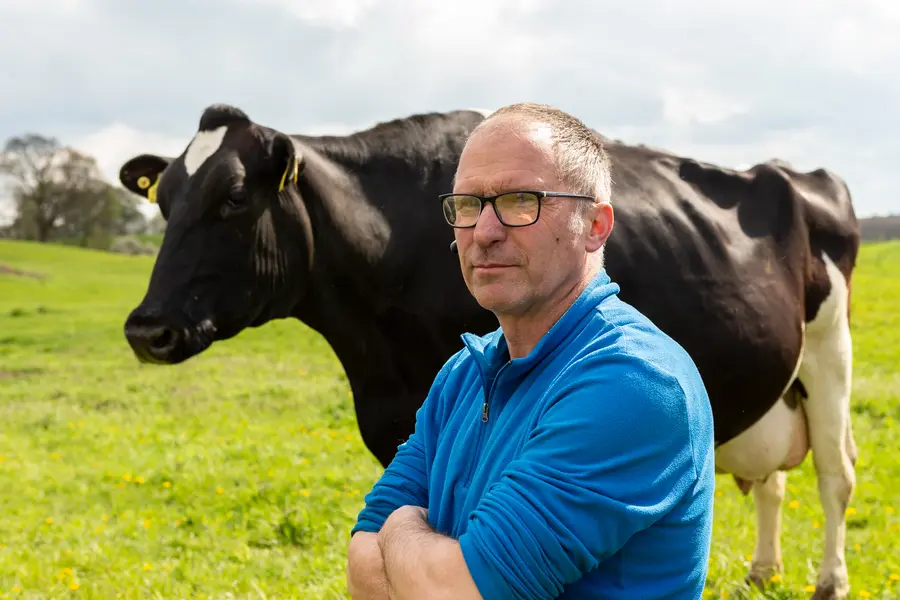

Frisch vom Hof in deinen Kühlschrank.
in 24 Stunden!
Milch, Joghurt, Pudding und Co. von unseren Kühen aus der Uckermark. Selbst gefüttert, selbst gemolken, selbst abgefüllt.


Such dir
deine Sorte aus.
 Erdbeermilch600 ml
Erdbeermilch600 ml Schokomilch230 ml und 600 ml
Schokomilch230 ml und 600 ml- Frischmilch1,8 % und 3,7 %
 HeidelbeereJoghurt mild, 200 g und 400 g
HeidelbeereJoghurt mild, 200 g und 400 g Vanillemilch230 ml und 600 ml
Vanillemilch230 ml und 600 ml KirscheJoghurt mild, 400 g
KirscheJoghurt mild, 400 g Fassbutteraus gesäuertem Rahm
Fassbutteraus gesäuertem Rahm PorridgeApfel-Zimt, vegan
PorridgeApfel-Zimt, vegan ButtermilchZitrone & Limette
ButtermilchZitrone & Limette
EiskaffeeApril bis September
Der Beutel, der Karton
alt aussehen lässt.

- 14 g leicht. Halb so viel Material wie eine übliche Milchverpackung.
- 40 % Kreide im Material. Weniger Kunststoff.
- Steht von allein im Kühlschrank und lässt sich einfach öffnen.
- Klein gefaltet nach dem Leeren. Weniger Müllvolumen.
- Warm machen direkt im Beutel: Er ist mikrowellengeeignet.
Vom Gras
zur Milch.
Alles auf einem Hof. Keine Umwege, keine Zwischenhändler.
 Eigene Felder90 % vom Futter wächst hier.
Eigene Felder90 % vom Futter wächst hier. Eigene Kühe600 Stück. Jede mit Namen.
Eigene Kühe600 Stück. Jede mit Namen.- Foto Molkerei folgtEigene MolkereiSchonend pasteurisiert. Nie H-Milch.
 Ab zu dirNach 24 Stunden im Kühlregal.
Ab zu dirNach 24 Stunden im Kühlregal.
Die heimlichen Stars
wohnen in Schmargendorf.
Hofcafé & Milchladen Mi bis So, 11 bis 18 Uhr



 LiveKuhCam: Was machen die gerade?
LiveKuhCam: Was machen die gerade?

Wo gibt's
Hemme?
Edeka · Rewe · Frischdienste · Cafés · Eisdielen · Milchladen auf dem Hof

Feiern auf dem HofEventlocation für bis zu 120 Gäste
Werde Teil davonJobs in Stall, Molkerei und Hofcafé
Familie HemmeBauern seit 1589, Molkerei seit 1998